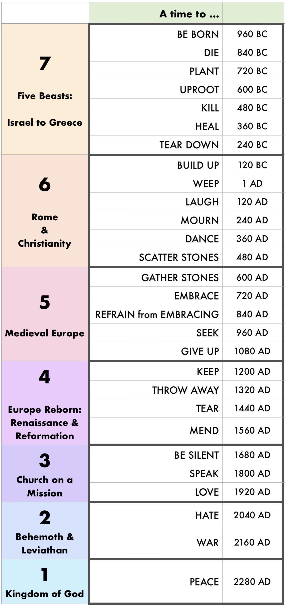

Solomon's Countdown Timer
Overturning Civilizations
3215 words long.
Published on 2025-09-08
A Perfect Triangle
As a lover of mathematics, certain numbers hold a fascination for me. Among those special numbers are triangular numbers and perfect numbers. Triangular numbers equal the sum of a consecutive series of integers. The first seventeen triangular numbers are:
1, 3, 6, 10, 15, 21, 28, 36, 45, 55, 66, 78, 91, 105, 120, 136, 153
Triangular numbers are easy to find and compute. Perfect numbers are harder to spot and rarer. They equal the sum of their factors. The first eight perfect numbers are:
6, 28, 496, 8128, 33550336, 8589869056, 137438691328, 2305, 843008139952128
Perfect numbers are exceptionally rare. That twenty-eight is both a triangular number (28 = 1+2+3+4+5+6+7) and a perfect number (28 = 1+2+4+7+14) is a mathematical oddity. It happens to be the number of days in a sidereal month (if you round up from the more precise measure of 27.32 days). It also happens to be the number of times in Solomon’s poem in Ecclesiastes 3.
Is is reasonable to impose mathematical concepts developed centuries later upon an ancient Bible text? It is if other did so long ago. Take for instance the number 153. It is the seventeenth perfect number and also the number of fish caught by Peter and the disciples in the second miraculous catch of fish that occurs in John 21. This numerical oddity was remarked upon by Augustine of Hippo in his Tractate 122 on the Gospel of John when he observed that 153 is the sum of their first seventeen whole numbers.
Did any Bible writers make use of ascending sequences like this? Yes! Habakkuk is structured in seven parts, and each part is shaped by the next number in the sequence.
- 1:1-4. One outline of the book. Habakkuk asks six questions about justice; they introduce each of the first six sections.
- 1:5-11. Two characteristics of the invaders are emphasized: they are bitter and hasty.
- 1:12-2:1. Three threes about people caught in a cruel net. The five net references match five empires. Dragnets match syncretistic empires that tolerated diversity (like Medo-Persia and Rome), while nets correspond to empires ruthlessly enforcing cultural conformity (like Babylon and Greece, especially the Seleucid Empire, plus the Islamic Empires). The mention of a hook is for Leviathan, matching words from Job 41.
- 2:2-5. A vision where the righteous are contrasted with the wicked by giving four types of information. It has four instructions on how to communicate the vision. Then four assurances it will come at the proper time. Then four qualities of the wicked (pride, arrogant treachery, greed, and oppression). Then one admirable quality of the righteous: faith.
- 2:6-20. Five woes are pronounced for breaking the commandments: theft, worshiping another god, murder & lies, adultery, and idolatry. These match five empires in reverse chronological order.
- 3:1-16. Ten ideas are each expressed six times concerning God’s war against the wicked. The ideas are time, weapons, wrath, fear, heaven & earth, water, glory, shaking, enemies, and the prophet’s six-part emotional response. The battle has each empire destroying the previous empire in sequence, with the Behemoth/Leviathan pair coming last, before God’s final victory.
- 3:17-19. Six aspects of harvest failure are listed, followed by a seventh part of praise to God, with Habakkuk believing that God would enable him one day to climb his high hills.
If Habakkuk built his argument as an increasing sequence, we can expect that other Bible writers may have done the same. In Solomon’s case, he might have hidden a descending sequence in his poem:
7-6-5-4-3-2-1
Let’s take a closer look.
Political & Prophetic Growth in Ecclesiastes
My book Peace, like Solomon Never Knew proposed a prophetic interpretation of the twenty-eight times of Solomon’s poem in Ecclesiastes 3. The poem is a clock. The clock started ticking in 960 BC, when Solomon completed construction of the temple in Jerusalem. Each tick of the clock is one of the times. The duration of each time is 120 years, derived by comparing the times to history and solving a riddle in Ecclesiastes. By this reckoning, we are near the end of “A time to love”. A time of persecution and civil war will soon follow as we enter “A time to hate”. Here is a brief list of the key events of each time which demonstrate the prophetic & political growth of world civilization.
- 960 BC. A time to be born. Israel born by civil war.
- 840 BC. A time to die. Israel taken captive by Assyria in 722 BC.
- 720 BC. A time to plant. Judah prospers under Hezekiah.
- 600 BC. A time to uproot. Judah exiled by Babylon.
- 480 BC. A time to kill. Haman incites genocide against the Jews but is killed instead, thanks to Queen Esther.
- 360 BC. A time to heal. Mild Ptolemaic rule.
- 240 BC. A time to tear down. Harsh Seleucid rule. Antiochus Epiphanes suppresses Judaism.
- 120 BC. A time to build. Herod’s temple and birth of Jesus, God’s new temple.
- 1 AD. A time to weep. Jesus crucified.
- 120 AD. A time to laugh. Justin Martyr. “For I myself, when I discovered the wicked disguise which the evil spirits had thrown around the divine doctrines of the Christians, to turn aside others from joining them, laughed both at those who framed these falsehoods, and at the disguise itself and at popular opinion and I confess that I both boast and with all my strength strive to be found a Christian.”
- 240 AD. A time to mourn. Diocletian’s persecution.
- 360 AD. A time to dance. Edict of Thessalonica (380 AD). Christianity becomes official state religion of Rome and persecution ends.
- 480 AD. A time to scatter stones. Rome sacked by Alaric in 410 AD. Fall of Rome in 476 AD.
- 600 AD. A time to gather stones. Dome of the Rock built, 688-691 AD.
- 720 AD. A time to embrace. Seventh and Last Ecumenical Council, concerning proper worship, the embrace of God.
- 840 AD. A time to refrain. Division between eastern and western Christianity. Church corruption, a thing to avoid, not embrace.
- 960 AD. A time to seek. Church seeks freedom from secular governmental control. Believers seek Jesus’ return.
- 1080 AD. A time to lose. First crusade. Jerusalem captured & lost.
- 1200 AD. A time to keep. Saint Francis. Keeping God’s commands.
- 1320 AD. A time to throw away. God throws away Byzantium.
- 1440 AD. A time to tear. Christendom torn apart as Constantinople falls to the Ottoman Empire and the Protestant Reformation divides the Roman Catholic Church. Wars of religion.
- 1560 AD. A time to mend. Peace of Westphalia. Religious tolerance extended to Lutherans, Calvinists & Jews.
- 1680 AD. A time to be silent. In the Pietism movement, Methodist Revival and Great Awakening, people listen to God.
- 1800 AD. A time to speak. Christian overseas missions triples the number of believers from 200 to 600 million souls using new means of mass communication to speak: telegraph, telephone, motion pictures, and prototypes of television.
- 1920 AD. A time to love. God shows the world unconditional love, blessing it with knowledge, prosperity & longer life.
- 2040 AD. A time to hate. Civil discord & persecution grow.
- 2160 AD. A time for war. Armageddon. Leviathan.
- 2280 AD. A time for peace. Christ returns (if he hasn’t already). Wedding supper of the lamb.
Material Growth in Ecclesiastes
The above interpretation assumes that the poem is a parable comparing the growth of a person to the growth of an empire. The twenty-eight times describe the growth of a person “under the sun” from birth to full maturity at “a time of peace”. Each group of four times constitutes a phase of material growth:
- Security: Birth to Age 7. Times to be born, die, plant, & uproot. Depend on your parents for your security as an infant and toddler.
- Ability: Age 7 to 14. Times to kill, heal, tear down & build up. Learn life skills from your parents and teachers as a child.
- Stability: Age 14 to 21. Times to weep, laugh, mourn & dance. Learn verbal and physical self control as a teen.
- Amity: Age 21 to 28. Times to scatter stones, gather stones, embrace & refrain from embracing. Pursue friendship, dating, romance and marriage as a young adult.
- Opportunity: Age 28 to 35. Times to seek, give up, keep & throw away. Grow your career & manage your possessions as an adult.
- Community: Age 35 to 42. Times to tear, mend, be silent & speak. Navigate conflict in family and community.
- Loyalty: Age 42 to 49. Times to love & hate, for war & peace. Prove your loyalty by your attitudes and deeds and rise to a position of leadership in the community.
The remainder of Ecclesiastes also extends the metaphor to a person’s middle years of maturity, then in the last two chapters, their decline and death.
Spiritual Growth in Ecclesiastes
Then the materialistic growth by a second analogy matches our spiritual growth.
- Security ➢ Eternal Security. A time to be born again, die to self, be planted in the church and uprooted from worldly relationships. Find the assurance of salvation.
- Ability ➢ Anointing. Master use of spiritual gifts.
- Stability ➢ Anchoring. Withstand spiritual warfare & destabilizing heresies.
- Amity ➢ Affinity. Form strong relationships in the church as part of the vine, based on truth and shared values, not blood or clan.
- Opportunity ➢ Calling. Discover and pursue Christian vocation.
- Community ➢ Communion. Forgiveness, reconciliation & Christian missions.
- Loyalty ➢ Fidelity. Unity in the faith and hospitality.
Countdown to Peace
There is a sensible way to divide church history into seven eras of equal length:
- 960 to 480 BC: Israel’s decline from Solomon to Babylonian Exile.
- 480 BC to 1 AD: Jews survive without sovereignty.
- 1 to 480 AD: Christianity born and ascends to lead Rome.
- 480 to 960 AD: Christianity lightens the Dark Ages & rules Europe.
- 960 to 1440 AD: Christendom carries Europe into a Renaissance.
- 1440 to 1920 AD: Reformation brings religious liberty, democracy, abolishes slavery, and the church spreads to most of the world.
- 1920 to ?: The final conflict between good and evil evil.
- That is not the only way to divide history. What if we divide Solomon’s times like a countdown sequence with each phase shorter than the one before it?
What does history look like then?
- 960-120 BC: born, die, plant, uproot, kill, heal, tear down
- 120 BC-600 AD: build, weep, laugh, mourn, dance, scatter
- 600-1200 AD: gather stones, embrace, refrain, seek, give up
- 1200-1680 AD: keep, throw away, tear, mend
- 1680-2040 AD: be silent, speak, love
- 2040-2280: hate, war
- 2280-?: Peace

In what follows, the key observation is what makes each successively smaller era a cohesive unit of history.
A time of Beasts. The first and longest era comprises seven times. The main story is the decline and fall of Israel amid the rise of the beasts: Assyria, Babylon, Medo-Persia, and Greece. It ends with a time to tear down. How are all these empires related? From Nebuchadnezzar’s dream, Daniel identifies Babylon, Medo-Persia, Greece and Rome as a unit, a single metal statue. Then in Revelation, the word given to John builds on this list of four.
9 This calls for a mind with wisdom:
the seven heads are seven mountains on which the woman is seated;
10 they are also seven kings,
five of whom have fallen, one is, the other has not yet come,
and when he does come he must remain only a little while.
11 As for the beast that was and is not,
it is an eighth but it belongs to the seven,
and it goes to destruction.
– Revelation 17:9-11
At the time John wrote, the five beasts who had already fallen were Israel, Assyria, Babylon, Medo-Persia and Greece. Those are the five empires that existed in sequence during this era. The sixth is distinguished from them as “one is”. That was Rome, for it was still in existence when John lived. Rome is called out in Daniel 7:7,19 as a terrifying beast, more fearsome than those that preceded it. Consequently, by combining data from Daniel and Revelation, we can divide the series of empires into four parts. The first part is Israel to Greece. The second part is Rome. The third part is the Islamic empires. The fourth part is the eighth beast, which is really two living contemporaneously: Behemoth and Leviathan, the beasts the from the land and the sea of Revelation 13.
Roman Empire. The second era of six times follows the rise of both Rome and early Christianity. During “a time to build”, Rome quadrupled in size and changed from a republic into an empire. This corresponds to the period between the end of the Third Punic War (when Rome ended the existence of Carthage, its sole rival for control of the Mediterranean) and the the time of Caesar Augustus.
At the end of the first segment of that second era Jesus was born. Thus two entities who would shape the next thousand years of history were born at that time – an empire and a man. A little over halfway through the seven times the two would be married, with Rome becoming a Christian empire. The city of Rome had survived nearly 800 years unscathed, but no longer. The marriage would not last, as the church became a widow when Rome fell in 476 AD, having thrice been sacked during “a time to scatter stones”: by Alaric the Visigoth in 410, Gaeseric the Vandal in 455, and the German Odoacer in 476.
Medieval Europe. The third era of five times spans the time of the Dark Ages. As Roman civilization continued its collapse, the church became Europe’s only light. East and West tried to embrace, but eventually fractured following “a time to refrain from embracing”. As a result, Western Europe began to form its own identity distinct from Rome and Byzantium. Alcuin of York, a prominent scholar in the court of Charlemagne, in a letter to Calcu ca 790 AD, wrote:
“In the first place, your belovedness should know that
by God’s mercy His holy church in Europe enjoys peace,
gains ground and grows greater.”
This is one of the earliest known references to Europe as a distinct political and religious entity.
After seeking Christ’s millennial return in pilgrimage, Christians were disappointed and forced to quit during “a time to give up”. While Europe gave up, the seventh beast did not. It arose when the first Islamic empire captured Jerusalem and built the Dome of the Rock upon the Temple Mount during “a time to gather stones”. That beast reasserted itself when Saladin recaptured Jerusalem from the Christian crusaders and founded the Ayyubid Caliphate.
Europe Reborn. The fourth era of four times spans the Renaissance and Reformation, a time of intellectual, spiritual and political tumult. God was throwing away one civilization and replacing it with another. During “a time to throw away”, the Great Famine and Black Plague devastated Europe and the Byzantine Empire collapsed, conquered by an appendage of the seventh beast, the Ottoman Empire. The Christian east was then torn off by the Ottomans in “a time to tear”, while in the west, the Reformation split the Roman Catholic Church into pieces. Out of the ashes of the ensuing wars of religion, the necessity to permit religious freedom entered the world, a gift from “a time to mend”.
Western Civilization. The fifth era of three times brought us modern western civilization and carries us to the present. A reformed Christian church carried the gospel to the whole world. It began during “a time to be silent” by listening to God via religious movements such as Pietism, Methodism, and the Great Awakening. What words did the church hear? It heard the call to abolish slavery and promote democracy. During “a time to speak”, the church used steamships, railroad, telegraph, telephone, radio, motion pictures and airplanes to spread that message to much of the world during the missionary era from 1800 to 1920. Then during “a time to love” (1920 to 2040) God has showered blessings upon the world to confirm His word: massive improvements in agriculture, travel, communication, life expectancy, medicine, education, and more.
Behemoth & Leviathan. The sixth era of two times is on the doorstep. The world shall reject God’s love, try to replace our current civilization with something better, and fail. Behemoth will apply tyrannical pressure to preserve law and order. In response, a people desiring freedom will flock to Leviathan, whose “man of lawlessness” will promise freedom but instead enslave people to debauchery, misery and death.
The Seventh Trumpet. During the seventh era and final era of one time Jesus Christ shall return to extend God’s kingdom to the whole earth.
Perfect Time
Take all that in. It is astonishing. Not only does Solomon’s poem outline a key feature of each historical era in a linear progression, but taken as a countdown sequence, it shows how God will overthrow and rebuild civilizations at an accelerating rate as Christ’s return approaches. The next wreck and rebuild is almost upon us.
There are three possible ways this could go. God could refine the Christian church through persecution to perfect it and create a more just society out of the trials. This would continue the progression that we have already seen. The church displaced Israel in the second era, then was refined in the third, fourth and fifth. A new iteration of the church could emerge in the sixth.
A second possibility is that God’s favor will return to Israel. The power of the church will be broken. A remnant of Christians will be perfected and spared but the majority will die in the tribulation or fall away, as the power of the Spirit returns to the Jews. Then as the world exults over defeating the last remnant of Christian influence it will be blind-sided as a resurgent Israel becomes a world superpower and its people have their ears sovereignly opened by God to understand the gospel. A spiritual people once more, they will gather for the final battle and make their last stand against Leviathan as Christ returns to Jerusalem.
A third possibility is that both the church and Israel endure the tribulation, are finally reconciled to each other and stand united against Satan’s last offensive. It is my hope that this third is what God has planned. For me, that would be keeping perfect time.
- Riddles: Introduction to Biblical riddles
- The Righteous Fall Seven Times: Proverbs 24 tells us when the righteous will fall - and rise again.
- Twice a Thousand Years: A Riddle from Ecclesiastes 6
- Solomon Keeps Perfect Time
- The Seven Pillars of Wisdom: What holds up Lady Wisdom's House in Proverbs 9?
- Why 153 Fish?: The Miraculous Catch of Fish from John 21
- Riddles of War: The Battle Cry of Proverbs 30
- Building a House: Construction advice by Solomon from Ecclesiastes 10
- Hannah's Song: Hannah's Amazing Prayer
- Satan's Taunt: Why is Satan's Taunt in Matthew 4 ironic?
- Parable of the Workers in the Vineyard: When would Jesus send out workers to his vineyard?
- The Parable of the Wedding Feast: If someone ghosted you over a wedding invite, would you burn down their city?
- The Childbearing: How does bearing children save women?